Google AI 스튜디오의 Build 기능 열기
Build는 대화만 하는 기능이 아니라, 프롬프트 하나로 실제로 동작하는 웹앱을 만들어 주는 기능입니다. 오늘 만들 앱의 작업실을 먼저 엽니다.
이 단계를 마치면 — 빈 Build 프로젝트가 열리고, 프롬프트를 붙여넣을 입력창과 오른쪽 미리보기 창이 보입니다.
따라 하기
Build로 만든 앱은 브라우저에서 도는 화면과 서버 두 부분으로 이루어집니다. 지도(Leaflet + OpenStreetMap)는 화면 쪽에서 키 없이 그려지고, 학교알리미 키는 서버에서만 읽고 브라우저로 내려보내지 않습니다. 그래서 학생이나 학부모가 앱을 써도 키가 노출되지 않습니다. 프롬프트에 이 구조가 이미 지정되어 있습니다.
발급받은 키 값은 채팅창·메신저·공유 문서에 붙여넣지 않습니다. 진행자에게는 "발급 완료"만 알리고, 화면을 공유하는 중이라면 키를 복사하기 전에 공유를 잠시 멈추세요.
준비된 프롬프트를 그대로 붙여넣기
아래 프롬프트에는 만들 화면뿐 아니라, 지난 실습에서 반복해서 생겼던 오류를 막는 조건이 함께 들어 있습니다. 문장을 고치면 그 오류가 다시 나타날 수 있으니 그대로 사용합니다.
이 단계를 마치면 — 앱 코드가 만들어지고, 오른쪽 미리보기에 서울 지도가 나타납니다. 학교알리미 키를 아직 넣지 않았으므로 학교 목록 자리에는 키 설정 안내가 보입니다.
따라 하기
붙여넣을 프롬프트 원문
# 서울 고교 지도
# Google AI Studio 신규 프로젝트용 최종 프롬프트
# 지도: Leaflet + OpenStreetMap (지도 API 키 없음)
서울특별시의 고등학교를 지도에서 탐색하고,
학교알리미의 공식 공시정보를 확인할 수 있는
완성도 높은 웹앱을 만들어줘.
앱 이름은
"서울 고교 지도"
부제는
"지도에서 찾고, 공시정보로 비교하는 서울 고등학교 안내"
로 한다.
이 앱은 중학생, 학부모, 담임교사,
진로진학상담교사가 사용하는 것을 목적으로 한다.
특히 진로교사가 학생과 상담하면서
- 우리 지역에는 어떤 고등학교가 있는가?
- 일반고, 자사고, 특목고, 영재고, 특성화고는 어디에 있는가?
- 남학교, 여학교, 남녀공학은 어떻게 분포하는가?
- 공립과 사립은 어떻게 다른가?
- 이 학교의 학생 규모는 어느 정도인가?
- 어떤 교육과정을 운영하는가?
- 학교의 특색사업이나 동아리는 무엇인가?
- 졸업생의 진로 현황은 어떠한가?
등을 확인할 수 있게 한다.
기술 구성은 다음과 같다.
화면: React
지도: Leaflet
배경지도: OpenStreetMap 표준 타일
학교 데이터: 학교알리미 Open API
학교알리미 인증키: 서버에서만 사용
========================================================
0. 가장 중요한 원칙
========================================================
이 앱은 실제 공공데이터를 사용하는 앱이다.
학교에 관한 사실정보는 반드시
학교알리미(학교정보공시) Open API
의 실제 데이터를 사용한다.
AI가 서울의 학교 목록을 임의로 만들지 않는다.
다음과 같은 데이터를 실제 데이터로 사용하지 않는다.
sampleSchools
mockSchools
fallbackSchools
demoSchools
hardcodedSchools
API 연결에 실패했다고
임시 학교 데이터를 대신 보여주지 않는다.
학교 수 역시
319
323
76
등 특정 숫자로 하드코딩하지 않는다.
실제 학교알리미 API에서 조회한 결과를 사용한다.
========================================================
1. 사용자가 입력하는 환경변수는 1개뿐
========================================================
이 프로젝트에서 사용자가 직접 입력해야 하는
환경변수/Secret은 다음 1개뿐이다.
SCHOOLINFO_API_KEY
용도:
학교알리미 Open API 인증
지도는 Leaflet과 OpenStreetMap 타일을 사용하므로
지도용 API 키, 지도용 계정, Map ID가 필요 없다.
절대로 다음 환경변수를 만들거나 요구하지 않는다.
GOOGLE_MAPS_API_KEY
VITE_GOOGLE_MAPS_API_KEY
NEXT_PUBLIC_GOOGLE_MAPS_API_KEY
PUBLIC_GOOGLE_MAPS_API_KEY
GOOGLE_MAP_ID
MAPS_API_KEY
MAPBOX_ACCESS_TOKEN
VITE_SCHOOLINFO_API_KEY
이 밖에도 지도나 타일을 위한
VITE_ / NEXT_PUBLIC_ / PUBLIC_ 접두사 환경변수를 만들지 않는다.
따라서 AI Studio가 사용자에게
환경변수를 입력하라고 요청한다면
SCHOOLINFO_API_KEY
하나의 입력란만 나타나야 한다.
========================================================
2. AI Studio Secret 구조
========================================================
Google AI Studio의 Secret은
서버 측 Node.js runtime에서 사용한다.
따라서 서버에서는
process.env.SCHOOLINFO_API_KEY
로 읽는다.
React 클라이언트에서
process.env...
또는
import.meta.env.VITE_...
를 이용하여
Secret을 직접 읽으려 하지 않는다.
SCHOOLINFO_API_KEY 값은
브라우저 응답
서버 로그
오류 메시지
정적 파일
빌드 결과물
어디에도 포함하지 않는다.
========================================================
3. 지도 기술 구성
========================================================
지도는 Leaflet으로 만든다.
npm 패키지:
leaflet
leaflet.markercluster
TypeScript를 쓰면 다음 타입 패키지도 추가한다.
@types/leaflet
@types/leaflet.markercluster
React와는 다음 방식으로 연결한다.
지도 전용 컴포넌트 SchoolMap 하나를 만들고,
그 안에서 useRef로 지도 컨테이너 div를 잡은 뒤
useEffect에서 Leaflet API로 지도를 직접 생성한다.
react-leaflet은 설치된 React 버전과
맞는 버전을 골라야 하는 문제가 있고,
이 앱은 마커 클러스터를 직접 제어해야 하므로
이번 프로젝트에서는 사용하지 않는다.
필요한 CSS를 반드시 import한다.
leaflet/dist/leaflet.css
leaflet.markercluster/dist/MarkerCluster.css
leaflet.markercluster/dist/MarkerCluster.Default.css
CSS를 빠뜨리면 타일이 조각나 보이거나
지도가 엉뚱한 위치에 그려지므로
반드시 확인한다.
다음은 사용하지 않는다.
Google Maps JavaScript API
@googlemaps/js-api-loader
@googlemaps/markerclusterer
Mapbox, 카카오맵, 네이버지도 등 키가 필요한 지도 SDK
지도 기능 때문에 사용자에게
키 입력, 계정 가입, 결제 등록을 요구하지 않는다.
========================================================
4. 지도 생성과 정리
========================================================
지도 컨테이너에는 반드시 명시적인 높이를 준다.
예:
PC: 본체 영역 높이에 맞춰 height: 100%
(부모 요소들도 높이가 정해져 있어야 한다)
모바일: height: 60vh, min-height: 360px
높이가 0이면 지도가 보이지 않으므로
부모 요소의 높이 체인을 확인한다.
React 재렌더링이나 개발 모드(StrictMode)에서
지도가 두 번 만들어지지 않게 한다.
- 지도 인스턴스는 useRef에 보관한다.
- useEffect 시작 시 이미 인스턴스가 있으면 새로 만들지 않는다.
- useEffect cleanup에서
등록한 이벤트를 해제하고
map.remove()를 호출한 뒤
ref를 null로 되돌린다.
"Map container is already initialized"
오류가 나지 않아야 한다.
화면 크기나 패널 크기가 바뀌면
(창 크기 변경, 모바일 회전, 목록 패널 접기/펴기, 탭 전환)
ResizeObserver 등으로 감지해
map.invalidateSize()를 호출한다.
숨겨져 있던 지도가 다시 보일 때도
invalidateSize()를 호출한다.
첫 화면에서는 서울 전체가 보이도록
fitBounds()를 적용한다.
서울 범위(대략):
남서 [37.413, 126.734]
북동 [37.715, 127.269]
(Leaflet 위치 배열은 [위도, 경도] 순서다.)
서울 밖으로 너무 멀리 이동하지 않도록
maxBounds를 걸 수 있다.
단, 서울 가장자리의 학교와 마커가 잘리지 않도록
위 서울 범위보다 사방으로 넉넉하게
(위도·경도 각각 0.15도 안팎) 여유를 둔다.
minZoom은 서울 전체가 보이는 줌보다
1단계 정도 작게 두어
사용자가 갇힌 느낌이 들지 않게 한다.
기본 지도(배경 타일과 서울 화면)는
학교알리미 API의 성공 여부와 관계없이
앱이 열리면 바로 표시한다.
학교 데이터를 기다리느라
지도 생성을 미루지 않는다.
========================================================
5. 배경지도 타일과 출처 표시
========================================================
타일 제공자 설정은 한 파일에서만 관리한다.
예: src/map/tileConfig.ts
export const TILE_CONFIG = {
url: "https://tile.openstreetmap.org/{z}/{x}/{y}.png",
attribution:
'© <a href="https://www.openstreetmap.org/copyright">OpenStreetMap</a> contributors',
maxZoom: 19
};
지도 코드는 이 설정만 읽어서 L.tileLayer를 만든다.
나중에 타일 제공자를 바꿀 때
이 파일 하나만 고치면 되게 한다.
타일 주소는 반드시 https를 사용한다.
http://tile.openstreetmap.org 는 사용하지 않는다.
OpenStreetMap 기여자 저작자 표시와
https://www.openstreetmap.org/copyright 링크를
지도 오른쪽 아래에 항상 보이게 한다.
attributionControl을 끄지 않는다.
범례, 버튼, 패널로 출처 표시를 가리지 않는다.
모바일에서도 가려지지 않게 한다.
OpenStreetMap 공개 타일 서버는
서비스 수준 보장이 없는 공용 자원이다.
앱이나 안내 문구에서
"무제한 무료"라고 설명하지 않는다.
이 앱은 소규모 교육 실습용이며
OSM 타일 이용 정책을 따른다.
https://operations.osmfoundation.org/policies/tiles/
따라서 다음을 지킨다.
- 사용자가 보고 있는 화면의 타일만 불러온다.
- 서울 전체 타일을 미리 내려받거나
다른 줌 레벨을 미리 불러오는 기능을 만들지 않는다.
- 오프라인 저장, 서비스워커 타일 캐시,
타일 일괄 수집 기능을 만들지 않는다.
- Referrer-Policy를 no-referrer로 설정하지 않는다.
(타일 요청에 Referer가 전달되어야 한다.)
- 타일 요청에 no-cache 헤더를 붙이거나
주소에 임의의 쿼리를 붙여 캐시를 우회하지 않는다.
유료 타일 서비스 가입이나
추가 API 키 입력을 기본 기능에 넣지 않는다.
========================================================
6. 지도와 데이터 상태 구분
========================================================
다음 상태를 구분하여 화면에 표시한다.
① 지도 준비 중
"지도를 준비하고 있습니다…"
(지도 컨테이너 위에 잠시 표시하고,
지도가 만들어지면 사라진다.)
② 배경지도 타일 로딩 실패
tileLayer의 tileerror 이벤트를 센다.
화면에 보이는 타일이 연속으로 실패하고
tileload가 한 번도 성공하지 않으면
지도 위에 작은 안내 띠를 띄운다.
"배경지도를 불러오지 못했습니다. 인터넷 연결을 확인한 뒤 다시 시도해 주세요. [다시 시도]"
[다시 시도]는 tileLayer.redraw()를 호출한다.
이때도 학교 마커, 경계선, 학교 목록은
지우지 않고 그대로 유지한다.
③ 학교알리미 인증키 미설정
서버에 SCHOOLINFO_API_KEY가 없으면
/api/schools는 HTTP 503과 함께
{ "error": "SCHOOLINFO_API_KEY_MISSING" }
을 반환한다.
이때 지도는 그대로 표시하고,
학교 목록 영역에 다음 안내를 표시한다.
"학교알리미 인증키(SCHOOLINFO_API_KEY)가 설정되지 않았습니다.
AI Studio의 Settings > Secrets(또는 배포 사이트의 환경변수)에 키를 추가하면 학교 목록이 나타납니다."
키 값이나 키 일부를 화면에 표시하지 않는다.
④ 학교 데이터 조회 중
"서울 고등학교 조회 중"
⑤ 일부 자치구 조회 실패
"서울 고등학교 XXX개교 · 일부 지역 조회 실패"
실패한 자치구 이름을 펼쳐 볼 수 있게 한다.
⑥ 학교 데이터 전체 조회 실패
"학교알리미 연결 실패"
[다시 시도] 버튼을 제공한다.
⑦ 정상 조회됐지만 검색·필터 결과 없음
"조건에 맞는 학교가 없습니다. 필터를 줄이거나 초기화해 보세요."
(데이터가 없는 것과 조건 결과가 0인 것을 구분한다.)
상태 ①②와 ③~⑦은 서로 독립적이다.
지도 상태가 학교 목록 표시를 막지 않고,
학교 데이터 상태가 지도 표시를 막지 않는다.
========================================================
7. 학교알리미 API는 서버에서만 호출
========================================================
학교알리미 Open API를
React 브라우저에서 직접 호출하지 않는다.
구조는 반드시 다음과 같다.
React Client
↓
AI Studio Node.js Server
↓
학교알리미 Open API
학교알리미 API Key는
process.env.SCHOOLINFO_API_KEY
를 사용한다.
SCHOOLINFO_API_KEY는
React 브라우저로 전달하지 않는다.
나중에 Netlify 등에 배포할 때
같은 코드를 서버 함수로 옮길 수 있도록,
학교알리미 조회와 데이터 정리 로직은
HTTP 서버 코드와 분리된 모듈로 만든다.
예: server/schoolinfo.ts
서버의 라우트 핸들러는
이 모듈을 호출하기만 한다.
========================================================
8. 학교 목록용 내부 API
========================================================
서버에 다음 endpoint를 만든다.
GET /api/schools
이 endpoint가
서울 25개 자치구의 고등학교를
학교알리미에서 조회하고
하나의 JSON 배열로 정리해
React에 반환한다.
응답에는 성공 지역 수와
실패한 자치구 이름 목록도 함께 담는다.
키가 없으면 6절 ③의 503 응답을 반환한다.
========================================================
9. 학교알리미 기본 요청
========================================================
학교알리미 학교기본정보 API를 사용한다.
기본 조건은
apiType = 0
sidoCode = 11
schulKndCode = 04
이다.
학교알리미 공식 Open API의
실제 요청 방식과 응답 구조를 기준으로 구현한다.
임의의 API endpoint나
존재하지 않는 파라미터를 만들어내지 않는다.
========================================================
10. 2026년 신규 API Key 대응
========================================================
2026년 신규 학교알리미 인증키에서는
sggCode가 필요한 방식이므로
서울 전체를 한 번에 요청하지 않는다.
서울 25개 자치구를 각각 조회한다.
다음 코드를 그대로 사용한다.
const SEOUL_DISTRICTS = [
{ name: "종로구", code: "11110" },
{ name: "중구", code: "11140" },
{ name: "용산구", code: "11170" },
{ name: "성동구", code: "11200" },
{ name: "광진구", code: "11215" },
{ name: "동대문구", code: "11230" },
{ name: "중랑구", code: "11260" },
{ name: "성북구", code: "11290" },
{ name: "강북구", code: "11305" },
{ name: "도봉구", code: "11320" },
{ name: "노원구", code: "11350" },
{ name: "은평구", code: "11380" },
{ name: "서대문구", code: "11410" },
{ name: "마포구", code: "11440" },
{ name: "양천구", code: "11470" },
{ name: "강서구", code: "11500" },
{ name: "구로구", code: "11530" },
{ name: "금천구", code: "11545" },
{ name: "영등포구", code: "11560" },
{ name: "동작구", code: "11590" },
{ name: "관악구", code: "11620" },
{ name: "서초구", code: "11650" },
{ name: "강남구", code: "11680" },
{ name: "송파구", code: "11710" },
{ name: "강동구", code: "11740" }
];
각 지역을
apiType=0
sidoCode=11
sggCode=해당 code
schulKndCode=04
조건으로 조회한다.
========================================================
11. 25개 구 API 호출 방식
========================================================
25개 중 일부 API 호출이 실패해도
전체 결과를 버리지 않는다.
Promise.allSettled()
또는 이에 준하는 안정적인 방식을 사용한다.
필요하면 API 요청을
3~5개씩 나누어 처리한다.
각 요청에는 적절한 시간 제한(예: 15초)을 두어
한 지역이 응답하지 않는다고
전체가 멈추지 않게 한다.
학교알리미가 반환하는 실제 응답에서
resultCode
resultMsg
list
를 확인한다.
학교 데이터는 반드시
list
배열에서 가져온다.
다음과 같은 임의의 구조를 만들지 않는다.
response.schools
response.items
response.rows
response.data.schools
========================================================
12. 학교 데이터 병합
========================================================
25개 자치구의 list 결과를
모두 합친다.
학교알리미의 학교 고유코드를 기준으로
중복만 제거한다.
학교 이름이 비슷하다는 이유로
학교를 제거하지 않는다.
학생 수가 없거나
학교 유형을 분류하지 못하거나
위치좌표가 없다는 이유로
학교 자체를 삭제하지 않는다.
========================================================
13. 데이터 로딩 상태
========================================================
앱을 실행하면 상단에
"서울 고등학교 조회 중"
이라고 표시할 수 있다.
하지만 loading 상태에서
무한정 멈추면 안 된다.
성공:
"서울 고등학교 XXX개교"
일부 지역 실패:
"서울 고등학교 XXX개교 · 일부 지역 조회 실패"
전체 실패:
"학교알리미 연결 실패"
인증키 미설정:
"학교알리미 인증키 설정 필요"
finally 처리를 사용하여
항상 loading 상태를 종료한다.
========================================================
14. 개발 중 API 확인
========================================================
API Key는 console에 출력하지 않는다.
요청 URL을 로그로 남길 때도
키가 들어 있는 쿼리 값은 지우고 남긴다.
개발 중 서버 console에는
종로구: XX개
중구: XX개
...
동대문구: XX개
...
강동구: XX개
성공 지역: XX/25
실패 지역: XX/25
전체 학교: XXX개
좌표 있는 학교: XXX개
좌표 없는 학교: XX개
정도의 로그를 출력할 수 있다.
이 로그는 사용자 화면에는 표시하지 않는다.
========================================================
15. 학교 데이터 구조
========================================================
학교알리미의 실제 데이터를
앱 내부 School 객체로 normalize한다.
예:
School {
schoolCode
schoolName
district
address
latitude
longitude
hasLocation
phone
homepage
genderType
foundationType
schoolType
studentCount
classCount
teacherCount
disclosureYear
}
실제 학교알리미 응답 필드명을 확인해서
올바르게 mapping한다.
존재하지 않는 필드명을
AI가 만들어내지 않는다.
========================================================
16. 위도·경도 처리
========================================================
학교 위치는
학교알리미 응답의 실제 위도·경도를 사용한다.
주소를 좌표로 바꾸는 외부 지오코딩 API를
추가로 호출하지 않는다.
위도·경도 값은 문자열로 올 수 있으므로
Number()로 숫자 변환한 뒤 검사한다.
다음 조건을 모두 만족할 때만
hasLocation = true 로 한다.
- 숫자 변환 결과가 유한한 수(Number.isFinite)
- 0이 아님
- 위도 37.3 ~ 37.8 사이
- 경도 126.6 ~ 127.4 사이
(서울과 그 주변을 넉넉하게 포함하는 범위)
위도와 경도가 뒤바뀌어 들어온 것으로 보여도
임의로 바꿔 넣지 않는다. hasLocation = false 로 둔다.
hasLocation이 false인 학교도
학교 목록
검색 결과
필터 결과
학교 수 집계
상세정보
비교와 즐겨찾기
에는 그대로 남긴다.
학교 카드에는 "위치정보 없음" 표시를 붙이고,
그 학교를 선택해도 지도는 움직이지 않는다.
지도 마커는 hasLocation이 true인 학교만 만든다.
========================================================
17. 서울 지도 화면
========================================================
첫 화면에서는
서울 전체가 한 화면에 들어와야 한다.
Leaflet fitBounds()를 사용한다.
전국이나 세계 지도가 먼저 보이지 않게 한다.
서울 외부는
시각적으로 덜 강조한다.
가능하면 서울 바깥을
반투명 회색으로 덮는다.
18절 경계 파일의 seoulOutline 선을
구멍으로 쓰는 다각형을 만들어 표현할 수 있다.
이 표현이 잘 되지 않으면 생략해도 된다.
지도와 마커 표시가 더 중요하다.
서울 학교가 주인공이 되어야 한다.
========================================================
18. 서울 구 경계 데이터
========================================================
서울 25개 자치구 경계를 지도에 표시한다.
경계 좌표를 AI가 직접 만들거나
기억에 의존해 근사 다각형을 그리지 않는다.
다음 검증된 GeoJSON 파일을 사용한다.
https://highmap.labbitory.com/data/seoul-gu.geojson
이 파일의 출처와 이용 조건:
원본: southkorea/seoul-maps
(https://github.com/southkorea/seoul-maps)
kostat/2013/json/seoul_municipalities_geo_simple.json
원자료: 통계청 센서스용 행정구역경계 2013 (단순화본)
라이선스: Apache License 2.0 (원본 저장소 표기)
파일의 metadata 항목에도 같은 내용이 들어 있다.
앱의 정보(About) 화면이나 README에
이 출처를 기록한다.
파일 구조:
FeatureCollection
features[].properties.kind 값으로 구분한다.
kind = "district"
→ 25개 자치구 Polygon
→ properties: name, sggCode, eduOffice
kind = "eduOffice"
→ 11개 교육지원청 외곽선 MultiLineString
→ 소속 구끼리 맞닿은 안쪽 경계는 이미 지워져 있다
→ properties: name, districts
kind = "seoulOutline"
→ 서울시 바깥 외곽선 MultiLineString
파일 위치와 불러오기:
이 파일은 프로젝트의 정적 파일
public/data/seoul-gu.geojson
로 포함하는 것을 기본으로 한다.
(브라우저에서는 /data/seoul-gu.geojson 으로 열린다.)
네가 이 파일 내용을 직접 내려받아 넣을 수 없다면
좌표를 지어내서 파일을 만들지 말고 파일을 비워 둔다.
앱은 다음 순서로 경계 파일을 불러온다.
1. /data/seoul-gu.geojson
2. 1이 없거나 실패하면
https://highmap.labbitory.com/data/seoul-gu.geojson
HTTP 상태가 200이어도 그대로 믿지 않는다.
없는 파일 주소에 index.html을 200으로 돌려주는
서버가 많기 때문이다.
다음을 모두 만족할 때만 성공으로 본다.
- JSON으로 파싱된다
- type이 "FeatureCollection"이다
- kind = "district" 인 feature가 25개다
그렇지 않으면 다음 주소로 넘어간다.
둘 다 실패하면 경계 토글을 비활성화하고
"구 경계 데이터를 불러오지 못했습니다"
라고 작게 표시한다.
경계 파일 로딩은
지도 생성과 학교 데이터 조회를 기다리게 하지 않는다.
(따로 비동기로 불러온다.)
좌표 순서 주의:
GeoJSON 좌표는 [경도, 위도] 순서다.
Leaflet의 위치 배열은 [위도, 경도] 순서다.
경계는 L.geoJSON()에 GeoJSON을 그대로 넘겨 그리고,
직접 좌표를 다룰 때는
L.GeoJSON.coordsToLatLng 등으로 변환한다.
배열 순서를 손으로 바꿔 쓰다 실수하지 않게 한다.
구 경계는 얇고 명확한 선으로 표현한다.
(예: 회색 1px, 채우기 없음 또는 아주 옅은 채우기)
각 구 이름도 표시한다.
구 Polygon의 중심 근처에
작은 라벨(L.tooltip permanent 또는 divIcon)로 표시하고,
학교 마커 클릭을 가로막지 않게
라벨은 interactive: false 로 둔다.
줌이 너무 작으면 라벨을 숨겨도 된다.
========================================================
19. 서울 교육지원청 경계
========================================================
11개 교육지원청 영역도 표시한다.
동부교육지원청
동대문구 + 중랑구
서부교육지원청
은평구 + 서대문구 + 마포구
남부교육지원청
영등포구 + 구로구 + 금천구
북부교육지원청
노원구 + 도봉구
중부교육지원청
종로구 + 중구 + 용산구
강동송파교육지원청
강동구 + 송파구
강서양천교육지원청
강서구 + 양천구
강남서초교육지원청
강남구 + 서초구
동작관악교육지원청
동작구 + 관악구
성동광진교육지원청
성동구 + 광진구
성북강북교육지원청
성북구 + 강북구
교육지원청 경계는
18절 파일의 kind = "eduOffice" 선을 그대로 사용한다.
이 선은 소속 구 사이의 안쪽 경계가 이미 지워져 있으므로,
교육지원청 하나가 하나의 영역으로 보인다.
구 Polygon마다 굵은 선을 따로 그려
안쪽 경계가 굵게 겹쳐 보이게 만들지 않는다.
구 경계보다
교육지원청 경계를 조금 더 굵게 표현한다.
(예: 짙은 파랑 2.5~3px)
필요하면 소속 구 Polygon을
교육지원청별로 아주 옅은 같은 색으로 채워
한 영역임을 보여줄 수 있다.
이때 채우기 Polygon의 테두리 선은 그리지 않는다.
[구 경계]
[교육지원청 경계]
ON/OFF 토글도 제공한다.
단,
경계 GeoJSON 로딩이나 처리에 문제가 생기더라도
지도, 학교 목록, 학교 마커의 렌더링을 막지 않는다.
경계 처리 코드는 try/catch로 감싸고,
실패하면 경계 레이어만 생략한다.
지도와 학교 데이터 표시가
항상 우선이다.
경계 레이어는 학교 마커보다 아래에 그린다.
(별도 pane 또는 레이어 순서 조정)
========================================================
20. 전체 UI
========================================================
PC 화면은 다음처럼 구성한다.
상단:
[로고]
서울 고교 지도
서울 고등학교 XXX개교
학교명 검색창
그 아래:
지역(구)
학교 유형
남녀
설립
필터
그 아래:
조건에 맞는 학교 XX개
적용된 조건
초기화
본체:
왼쪽 약 35%
→ 학교 목록
오른쪽 약 65%
→ Leaflet 지도
모바일에서는 지도와 목록을 위아래로 쌓거나
[지도] [목록] 탭으로 전환한다.
탭으로 전환할 때는
지도가 다시 보이는 순간 invalidateSize()를 호출한다.
흰색 중심의 깔끔한 화면에
파란색을 주요 포인트 색상으로 사용한다.
교육용 서비스처럼
신뢰감 있게 디자인한다.
========================================================
21. 지역 필터
========================================================
서울 전체 (25개 자치구)
및
25개 구를 선택할 수 있게 한다.
각 구 옆에
실제 현재 데이터에서 계산한 학교 수를 표시한다.
예:
동대문구 (11개교)
숫자를 하드코딩하지 않는다.
구를 선택하면 지도도 그 구 범위로 이동한다.
(경계 파일의 해당 구 Polygon 범위로 fitBounds.
경계 파일이 없으면 그 구 학교 마커들의 범위를 사용한다.)
========================================================
22. 학교 유형 필터
========================================================
다음 유형을 구분한다.
전체
일반고
자사고
특목고
영재고
특성화고
학력인정고
기타
공식 데이터만으로 학교 유형을
확실하게 분류할 수 없는 경우
"확인 필요"
또는
"기타"
로 표시한다.
학교 이름만 보고
학교 유형을 추측하지 않는다.
========================================================
23. 남녀 및 설립 필터
========================================================
남녀:
전체
남학교
여학교
남녀공학
설립:
전체
공립
사립
국립
기타
여러 필터를 동시에 적용할 수 있게 한다.
예:
동대문구
+
일반고
+
여학교
+
사립
========================================================
24. 지도 학교 마커
========================================================
학교 위치는
학교알리미 위도/경도를 사용한다.
(16절의 검사를 통과한 학교만 마커를 만든다.)
마커는 L.divIcon으로 직접 그린다.
Leaflet 기본 마커 이미지(marker-icon.png)는
번들러에서 이미지 경로가 깨지기 쉬우므로 사용하지 않는다.
지도에서 다음 정보를
구분할 수 있어야 한다.
학교 유형
→ 마커 색상
남녀 구분
→ 마커 안의 문자
설립 구분
→ 테두리 또는 작은 배지
예:
남학교 → 남
여학교 → 여
남녀공학 → 공
범례를 지도 한쪽에 표시한다.
(오른쪽 아래 OSM 출처 표시와 겹치지 않는 위치)
학교 수가 많으므로
leaflet.markercluster로 마커를 묶는다.
L.markerClusterGroup({ chunkedLoading: true })
처럼 여러 마커를 한꺼번에 추가하는 방식을 쓰고,
마커를 하나씩 addLayer 하며
매번 다시 그리지 않는다.
검색어나 필터가 바뀌면
클러스터 그룹을 clearLayers() 한 뒤
현재 조건에 맞는 학교의 마커만 addLayers() 한다.
목록에 보이는 학교와
지도에 보이는 마커가 항상 같은 조건을 따른다.
(좌표 없는 학교는 목록에만 있다.)
마커 객체는 schoolCode를 키로 하는 Map에 보관해
목록과 지도를 연결할 때 사용한다.
마커 안에 들어가는 문자와
툴팁·팝업에 넣는 학교명, 주소 등
외부에서 온 문자열은
innerHTML에 그대로 넣지 않는다.
- 팝업과 툴팁은 document.createElement로 만든 요소에
textContent로 값을 넣어 전달하거나
- HTML 문자열이 꼭 필요하면
& < > " ' 를 이스케이프하는 함수를 거친다.
dangerouslySetInnerHTML로
학교알리미 응답 문자열을 렌더링하지 않는다.
========================================================
25. 지도 마커와 학교 목록 동기화
========================================================
왼쪽 학교 카드를 클릭하면
지도 중심이 해당 학교로 이동하고
해당 마커를 강조한다.
마커가 클러스터 안에 묶여 있으면
markerClusterGroup.zoomToShowLayer(marker, callback)
을 사용해 클러스터를 풀거나 확대한 뒤
callback 안에서 마커를 강조하고 팝업을 연다.
강조는 선택된 학교의 divIcon을
테두리가 굵은 아이콘으로 바꾸고(setIcon)
setZIndexOffset으로 위에 올리는 방식으로 한다.
다른 학교를 선택하면
이전 마커의 강조를 원래대로 되돌린다.
좌표가 없는 학교를 선택하면
지도는 움직이지 않고
"이 학교는 위치정보가 없어 지도에 표시되지 않습니다"
라고 짧게 알려 준다.
지도 마커를 클릭하면
왼쪽 학교 목록에서 해당 학교를 선택하고
목록을 그 카드 위치로 스크롤하며
학교 상세정보를 연다.
========================================================
26. 학교 목록 카드
========================================================
예:
[일반고] [동대문구] [남학교] [사립]
경희고등학교
총 학생: 710명
학급당: 29.6명
좌표가 없는 학교는
카드에 [위치정보 없음] 배지를 함께 표시한다.
단,
아직 상세 데이터를 불러오지 않았다면
총 학생: -
처럼 고정된 빈값을 계속 보여주지 않는다.
필요하면
"상세정보 확인"
정도로 표시하고
학교 선택 후 상세 데이터를 불러온다.
========================================================
27. 학교 상세정보 조회
========================================================
서울 전체 학교의 모든 상세정보를
앱 시작 시 한꺼번에 호출하지 않는다.
처음에는 학교 기본정보만 불러온다.
사용자가 학교를 클릭했을 때
schoolCode
를 이용해
해당 학교의 상세 공시정보를 조회한다.
상세 조회도 서버의 내부 endpoint를 거친다.
브라우저가 학교알리미를 직접 호출하지 않는다.
lazy loading을 사용한다.
========================================================
28. 학교 상세화면 — 기본정보
========================================================
학교명
학교유형
남녀구분
설립구분
지역
주소
전화번호
홈페이지
관할 교육지원청
학생 수
학급 수
교원 수
등을 보여준다.
========================================================
29. 학생 현황
========================================================
학교알리미의 실제 공시자료가 존재하면
전체 학생 수
남학생 수
여학생 수
학년별 학생 수
전체 학급 수
학년별 학급 수
교원 수
를 보여준다.
학급당 학생 수를 직접 계산한다면
전체 학생 수 ÷ 전체 학급 수
를 사용하고
"공시자료 기준 계산값"
이라고 표시한다.
========================================================
30. 입학 정보
========================================================
진로교사가 중요한 정보를
위쪽에 배치한다.
학교알리미에 존재하면
입학생 현황
입학전형 자료
모집 관련 자료
입학전형 요강
등을 제공한다.
PDF/HWP 등의 첨부자료라면
[입학전형 자료 보기]
버튼을 제공한다.
========================================================
31. 교육과정
========================================================
다음 내용을
학교알리미에서 확인되는 범위 내에서 제공한다.
학교교육과정 편성·운영
개설 교과
개설 과목
선택과목
학년별 교육과정
관련 공시자료
구조화된 데이터면
표 또는 카드로 표시한다.
파일로만 존재하면
[교육과정 원문 보기]
버튼을 제공한다.
========================================================
32. 학교 특색
========================================================
학교알리미에 존재하면
교육운영 특색사업
동아리 활동
방과후학교
도서관
학생교육활동 지원시설
등을 보여준다.
========================================================
33. 졸업 후 진로
========================================================
학교알리미에 존재하면
졸업생 진로 현황
진학
취업
기타
등을 보여준다.
자료의 기준연도를 반드시 표시한다.
예:
2025학년도 졸업생 진로 현황
========================================================
34. 파일 자료
========================================================
학교알리미 자료가
PDF
HWP
XLSX
DOCX
등 파일로 존재하면
내용을 안정적으로 읽을 수 없는 경우
억지로 분석하지 않는다.
대신
[원문 보기]
버튼을 제공한다.
파일 URL을 임의로 만들지 않는다.
실제 API나 학교알리미에서 확인된 링크만 사용한다.
========================================================
35. 데이터 없음과 오류 구분
========================================================
다음 상태는 반드시 구분한다.
실제 공시자료 없음
→ "공시자료 없음"
API 호출 실패
→ "자료를 불러오지 못했습니다"
아직 조회하지 않음
→ "학교를 선택하면 정보를 불러옵니다"
API가 실패했는데
0명
이라고 표시하지 않는다.
========================================================
36. 비교 기능
========================================================
학교 상세 화면에서
[비교함에 추가]
버튼을 제공한다.
최대 4개 학교를 비교할 수 있다.
비교 항목:
학교유형
남녀구분
설립구분
지역
학생 수
학급 수
학급당 학생 수
교원 수
교육과정
선택과목
특색사업
동아리
입학전형
졸업생 진로
========================================================
37. 즐겨찾기
========================================================
별표 버튼으로
관심학교를 저장한다.
localStorage를 사용한다.
Firebase
Supabase
회원가입
등은 사용하지 않는다.
========================================================
38. 앱을 처음 실행했을 때의 순서
========================================================
앱이 열리면 다음 두 흐름이
서로 기다리지 않고 함께 진행된다.
[지도 흐름] — 키가 없어도 동작
1. SchoolMap 컴포넌트 생성
2. OpenStreetMap 배경지도 표시
3. 서울 전체 fitBounds
4. 경계 파일 불러오기 → 구·교육지원청 경계 표시
(실패하면 경계만 생략)
[학교 데이터 흐름] — SCHOOLINFO_API_KEY 필요
1. GET /api/schools 실행
2. 서버가 서울 25개 자치구 학교정보 조회
3. 학교 목록 표시
4. 좌표가 있는 학교의 지도 마커 표시
5. 검색/필터 사용 가능
SCHOOLINFO_API_KEY를 입력하기 전에도
서울 지도는 보여야 한다.
이때 학교 목록 자리에는
6절 ③의 키 설정 안내가 보인다.
사용자가 SCHOOLINFO_API_KEY를 입력하고 Apply 하면
학교 데이터 흐름이 정상 동작해야 하며,
그 뒤에 다른 환경변수를 추가로 요구하면 안 된다.
========================================================
39. 초기 화면 완료 조건
========================================================
SCHOOLINFO_API_KEY를 넣기 전:
서울 고교 지도 제목
OpenStreetMap 배경의 서울 지도
오른쪽 아래 OpenStreetMap 출처 표시
학교 목록 자리의 키 설정 안내
SCHOOLINFO_API_KEY를 넣은 뒤
앱 첫 화면에서 다음이 모두 보여야 한다.
서울 고교 지도
서울 고등학교 XXX개교
지역/유형 등의 필터
왼쪽:
학교 목록
오른쪽:
서울 Leaflet 지도
(OpenStreetMap 배경, 구·교육지원청 경계)
지도:
학교 마커와 클러스터
동대문구를 선택하면
동대문구 API에서 실제 조회된
고등학교 전체가 학교 목록에 나타나고,
그중 좌표가 있는 학교는 지도에도 나타나야 한다.
========================================================
40. 중요한 금지사항
========================================================
절대로 다음 작업을 하지 않는다.
1.
GOOGLE_MAPS_API_KEY 등 지도용 환경변수 생성
2.
지도를 위해 API 키, 계정 가입, 결제 등록 요구
3.
Google Maps, Mapbox 등 키가 필요한 지도 SDK 사용
4.
지도 컨테이너 높이 0으로 두기
또는 Leaflet CSS 누락
5.
OSM 타일 사전 다운로드, 일괄 수집, 오프라인 저장
6.
OpenStreetMap 출처 표시 숨기기
7.
경계 좌표를 AI가 지어내기
8.
학교알리미 API를 브라우저에서 직접 호출
9.
학교알리미 API Key를 브라우저에 전달하거나
로그·정적 파일에 남기기
10.
서울 학교 목록 하드코딩
11.
API 실패 시 sample school 사용
12.
학교 수 하드코딩
13.
위치가 없는 학교 삭제
14.
분류가 안 되는 학교 삭제
15.
하나의 구 API 실패 때문에
전체 서울 조회 실패
16.
API 오류 상태에서
무한 "조회 중"
17.
학교 데이터를 기다리느라 지도 표시를 미루기
18.
외부 문자열을 innerHTML로 그대로 렌더링
========================================================
41. 구현 우선순위
========================================================
한꺼번에 모든 기능을 만들다가
핵심 기능을 깨뜨리지 않는다.
먼저 아래 기능을 완전히 구현한다.
PHASE 1
Leaflet 지도 표시
(CSS, 컨테이너 높이, 서울 fitBounds, OSM 출처 표시,
중복 초기화 방지, invalidateSize)
PHASE 2
서버에서 SCHOOLINFO_API_KEY 읽기
(키 없음 503 응답과 화면 안내 포함)
PHASE 3
/api/schools
PHASE 4
서울 25개 구 학교 조회
PHASE 5
학교 목록
(좌표 없는 학교 포함)
PHASE 6
학교 지도 마커와 클러스터
PHASE 7
검색 및 필터
(목록·마커 동시 갱신)
PHASE 8
목록 ↔ 마커 선택 동기화
여기까지 정상 작동한 것을
실제로 preview에서 확인한다.
그 후
PHASE 9
구·교육지원청 경계와 토글
PHASE 10
학교 상세정보
PHASE 11
학생현황
PHASE 12
교육과정
PHASE 13
입학정보
PHASE 14
진로현황
PHASE 15
비교 / 즐겨찾기
를 구현한다.
이미 정상 작동하는 기능은
다음 Phase에서 다시 작성하지 않는다.
========================================================
42. 최종 자체 점검
========================================================
작업을 완료하기 전에
반드시 스스로 다음을 확인한다.
환경변수 입력란이 SCHOOLINFO_API_KEY 하나뿐인가?
GOOGLE_MAPS_API_KEY, VITE_ 지도 변수, Map ID 요구가 없는가?
package.json에 @googlemaps 패키지가 없는가?
SCHOOLINFO_API_KEY 없이도 서울 지도가 보이는가?
키가 없을 때 학교 목록 자리에 키 설정 안내가 보이는가?
지도 오른쪽 아래에 OpenStreetMap 출처 표시가 보이는가?
개발 모드에서 "Map container is already initialized" 오류가 없는가?
창 크기를 바꾸거나 모바일 탭을 바꿔도 지도가 회색으로 깨지지 않는가?
서울 25개 구 API 요청이 수행되는가?
학교 목록이 실제 schoolinfo list인가?
좌표 없는 학교가 목록에 남아 있고 "위치정보 없음"으로 표시되는가?
학교 목록과 지도 마커의 개수가
(좌표 없는 학교를 빼면) 맞는가?
동대문구 등 특정 구를 선택했을 때
그 구의 학교가 모두 표시되는가?
클러스터 안의 학교를 목록에서 선택하면
지도가 확대되어 그 마커가 강조되는가?
학교 마커를 클릭할 수 있는가?
학교 상세정보가 열리는가?
경계 파일이 없어도 지도와 학교 목록이 정상인가?
API 오류가 전체 앱을 멈추게 하지 않는가?
이 검증이 완료된 상태에서만
프로젝트 생성을 완료했다고 판단한다.
========================================================
43. 최종 지시
========================================================
위 요구사항에 맞춰
처음부터 프로젝트를 생성해줘.
특히 다음 문제를 만들지 마라.
지도용 API 키나 결제 등록을 요구하는 문제
지도 영역이 높이 0이라 보이지 않는 문제
Leaflet CSS 누락으로 타일이 흩어지는 문제
개발 모드에서 지도가 두 번 초기화되는 문제
지도만 나오고 학교 마커가 안 나오는 문제
학교가 76개만 나오는 문제
학교가 0개가 되는 문제
조회 중 상태에서 멈추는 문제
사용자는
SCHOOLINFO_API_KEY
하나만 입력하면 된다.
앱을 연 직후
서울 전체 OpenStreetMap 지도
가 바로 보이고,
키를 입력하고 Apply를 누른 직후
실제 학교알리미 서울 고등학교 목록
+
학교 마커
+
지역 및 학교유형 필터
가 정상적으로 나타나는 상태를
가장 우선적으로 완성해줘.
서울 지도가 보이고 오른쪽 아래에 "© OpenStreetMap contributors"가 있으며, 학교 목록 자리에 "학교알리미 인증키(SCHOOLINFO_API_KEY)가 설정되지 않았습니다"라는 안내가 나오면 정상입니다. 지도는 키 없이 먼저 뜨고, 학교와 마커는 3단계에서 키를 넣은 뒤에 나타납니다.
지도 영역의 높이가 0이거나 Leaflet CSS가 빠진 경우가 대부분입니다. AI 스튜디오에 "지도 컨테이너에 명시적인 높이를 주고, leaflet/dist/leaflet.css와 MarkerCluster CSS를 import했는지 확인해 고쳐줘"라고 요청하세요. 지도 위에 "배경지도를 불러오지 못했습니다"가 뜨면 인터넷 연결이나 학교 방화벽 문제일 수 있으니 [다시 시도]를 눌러 봅니다.
학교알리미 API 키 발급
이 앱에 필요한 키는 학교알리미 인증키 하나입니다. 이 키로 서버가 학교 공시자료를 불러옵니다. 지도는 OpenStreetMap을 쓰므로 지도용 키나 카드 등록이 필요 없습니다.
이 단계를 마치면 — 학교알리미 키가 AI 스튜디오 Secrets에 정확한 이름으로 저장되고, 미리보기의 서울 지도 위에 학교 마커와 학교 목록이 나타납니다.
| 키 | 발급 위치 | 저장할 이름 | 쓰이는 곳 |
|---|---|---|---|
| 학교알리미 | 학교알리미 > OpenAPI > 나의 정보 조회 | SCHOOLINFO_API_KEY | 서버 |
가. 학교알리미 인증키 받기
-
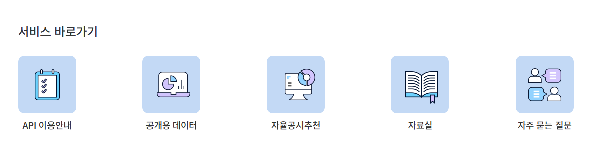
① 여기를 누르세요서비스 바로가기에서 API 이용안내를 누릅니다. -
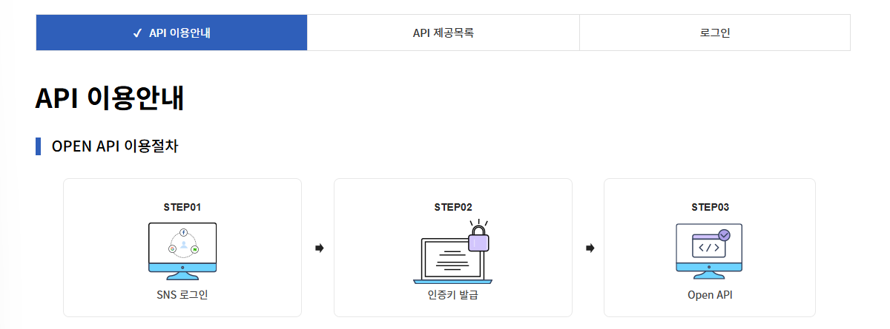
② 로그인 누르기오른쪽 위 로그인 탭을 누른 뒤 네이버·카카오 중 하나로 로그인합니다. 그 다음 인증키 발급(STEP02)으로 이어집니다.
2026년 1월 1일 이후 발급된 인증키는 요청할 때 시·군·구 코드(sggCode)가 반드시 있어야 합니다. 그래서 서울 전체를 한 번에 부르지 않고 25개 자치구를 각각 조회한 뒤 합칩니다. 2단계 프롬프트에 이 방식이 이미 들어 있습니다.
나. AI 스튜디오 Secrets에 키 저장
-
Enter your environment variable to continue ⓘ✕NameValue SCHOOLINFO_API_KEYSecret value③ 학교알리미 키◌
앱이 키를 요구하면 이런 창이 뜨기도 합니다. Name은 이미 채워져 있으니 Value 칸에 키 값만 붙여넣습니다. 입력란은 이 한 줄뿐이어야 합니다.
배경지도는 OpenStreetMap의 공개 타일을 Leaflet으로 그리기 때문에 지도 API 키, Google Cloud 프로젝트, 결제 계정, 카드 등록이 모두 필요 없습니다. 다만 공개 타일 서버는 서비스 보장이 없는 공용 자원이므로 "무제한 무료"로 생각하지 말고, 연수처럼 소규모로 쓰며 타일 이용 정책을 지킵니다. 지도 오른쪽 아래의 OpenStreetMap 출처 표시는 지우지 않습니다.
잘 안 될 때
| 증상 | 먼저 확인할 것 |
|---|---|
| 학교 목록 자리에 "인증키가 설정되지 않았습니다" | Secret 이름이 SCHOOLINFO_API_KEY와 정확히 같은지, 저장 후 Apply를 눌렀는지 |
| 학교알리미 요청 실패 | 키 상태, apiType, 학교급, 시도·시군구 코드. 2026년 신규 키는 sggCode 필수 |
| "일부 지역 조회 실패" | 실패한 구 이름을 펼쳐 보고 잠시 뒤 다시 시도. 나머지 구의 학교는 그대로 쓸 수 있습니다 |
| 지도 자리가 비어 있음 | 지도 컨테이너 높이가 0인지, Leaflet CSS를 불러왔는지 |
| 지도 조각이 흩어지거나 회색 칸이 남음 | Leaflet CSS 누락, 또는 패널 크기가 바뀐 뒤 invalidateSize()를 부르지 않은 경우 |
| "배경지도를 불러오지 못했습니다" | 인터넷 연결, 학교 방화벽이 tile.openstreetmap.org를 막는지. [다시 시도]를 눌러 봅니다. 학교 마커와 목록은 그대로 남아야 정상입니다 |
| 마커는 없고 목록만 있음 | 학교알리미 위도·경도를 숫자로 바꿔 쓰는지. 좌표 없는 학교는 원래 마커가 없습니다 |
| 구·교육지원청 경계가 안 보임 | 경계 토글이 켜져 있는지. 경계 파일을 못 불러오면 경계만 빠지고 나머지는 동작합니다. 인터넷 연결을 확인하고 새로고침합니다 |
| AI 스튜디오에서 값이 undefined | Secret 이름의 대소문자와 공백, 저장 여부, 서버 재시작 |
공식 안내 바로가기
- 학교알리미 API 이용안내 — 로그인부터 인증키 발급까지
- 학교알리미 Open API 개발자 활용 가이드(PDF) — 인증키 확인 경로
- 파라미터 운영 기준 변경 안내 — 2026년 신규 키의 시·군·구 코드 필수화
- AI 스튜디오 풀스택 앱과 Secrets — 설정 > Secrets와 서버 환경 변수
- OpenStreetMap 타일 이용 정책 — 출처 표시, 금지되는 사용
- Leaflet 공식 문서 — 지도, 타일 레이어, GeoJSON
GitHub에 저장하고 Netlify로 배포하기
AI 스튜디오 안에서만 열리는 앱은 다른 선생님이나 학생에게 보여주기 어렵습니다. 코드를 GitHub 저장소에 보관하고, Netlify가 그 저장소를 가져와 빌드하게 하면 누구나 열 수 있는 주소가 생깁니다. 터미널(명령어 창)은 쓰지 않습니다.
이 단계를 마치면 — GitHub의 seoul-highschool-map 저장소에 앱 코드가 있고, https://○○○.netlify.app 주소에서 지도와 학교 목록이 그대로 동작합니다.
학교 목록은 서버가 학교알리미 키로 불러옵니다. 그래서 GitHub에 올리기 전에 서버 부분을 Netlify가 실행할 수 있는 형태(Netlify Functions)로 바꿔 달라고 AI 스튜디오에 한 번 요청하고, Netlify에는 SCHOOLINFO_API_KEY를 환경 변수로 등록합니다. 둘 중 하나라도 빠지면 지도는 떠도 학교 목록이 비어 있습니다.
가. 배포 준비 요청
이 앱을 GitHub에 올려 Netlify로 배포할 수 있게 점검하고 바꿔줘. - React + Vite 앱. npm run build 실행 시 dist 폴더가 만들어지게 해줘. - 서버의 /api/ 로 시작하는 모든 endpoint(GET /api/schools 와 학교 상세정보 조회 endpoint)를 Netlify Functions(netlify/functions 폴더)로 옮겨줘. 각 함수는 export const config = { path: "/api/..." } 로 지금과 같은 주소를 쓰게 하고, 학교알리미 조회 로직은 기존 server 모듈을 그대로 불러다 써줘. - 저장소 최상위에 netlify.toml 을 만들어 build command 는 npm run build, publish 는 dist, functions 는 netlify/functions 로 지정해줘. 화면 주소를 위한 리다이렉트가 /api/ 요청을 가로채지 않게 해줘. - 키는 서버 함수 안에서 process.env.SCHOOLINFO_API_KEY 로만 읽어줘. VITE_ 같은 프런트엔드 빌드 변수로 만들지 말고, netlify.toml 이나 .env 파일에 키를 적지 말고, 브라우저 응답이나 로그에 키를 남기지 마. - node_modules 와 dist 는 저장소에 올리지 않게 .gitignore 에 넣어줘. - 지도는 지금처럼 Leaflet과 OpenStreetMap 타일을 키 없이 쓰고, 경계 파일은 public/data/seoul-gu.geojson 이 있으면 그것을, 없으면 지금처럼 https://highmap.labbitory.com/data/seoul-gu.geojson 을 불러와줘. - README 에 앱 목적, 데이터 출처(학교알리미, OpenStreetMap, 경계 파일 출처), 빌드 명령, Netlify 설정, 필요한 환경 변수 SCHOOLINFO_API_KEY 를 간단히 적어줘. - 이미 정상 작동하는 지도·학교 목록·필터 기능은 다시 작성하지 말고 그대로 두고, 배포에 필요한 부분만 바꿔줘. - 빌드를 실행할 수 있는 환경이면 실제 빌드를 확인하고 결과를 알려줘. 실행할 수 없으면 확인하지 못했다고 분명히 말해줘.
복사했습니다나. GitHub에 저장하기
GitHub 계정이 없다면: 먼저 가입하기
- 새 탭에서 GitHub를 열고 오른쪽 위의 Sign up을 누릅니다.
- 이메일은 가급적 AI 스튜디오에서 쓰는 Gmail 주소를 입력합니다. 인증 메일을 찾기 쉽습니다.
- 비밀번호와 사용자 이름(Username)을 정합니다. 사용자 이름은 저장소 주소(github.com/사용자이름)에 공개되므로 학생 이름이나 개인 정보를 넣지 않습니다.
- 사람인지 확인하는 퍼즐이 나오면 본인이 직접 풉니다.
- 메일로 온 인증코드를 가입 화면에 입력합니다. 메일이 안 보이면 스팸함과 프로모션 탭을 확인합니다.
- 유료 플랜 안내가 나오면 무료(Free)를 고르거나 건너뜁니다. 결제 정보는 입력하지 않습니다.
Google AI 스튜디오·GitHub 실제 화면 캡처 (2026년 10월, 다른 연수 실습 화면) — 메뉴 이름과 위치는 바뀔 수 있습니다. 화면 속 저장소 이름 earthquake 자리에 seoul-highschool-map을 씁니다.
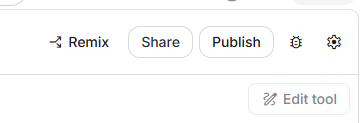
123- Share
- Publish
- 톱니(설정)
셋 중 아무거나 누르면 여러 탭이 있는 패널이 열립니다. 배포(Publish)를 하려는 것이 아니라 GitHub 탭으로 가려고 여는 것입니다.
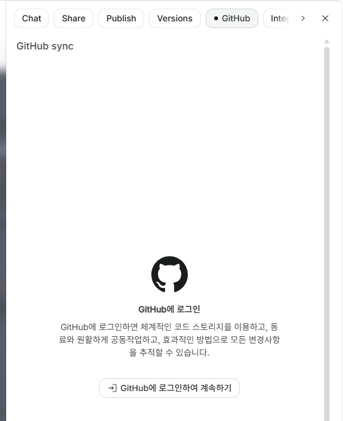
12- 위쪽 탭 줄에서 GitHub를 고릅니다. 탭이 안 보이면 오른쪽 > 화살표로 넘겨 찾습니다.
- GitHub에 로그인하여 계속하기를 누릅니다. GitHub 로그인 창이 나오면 본인이 직접 로그인합니다.
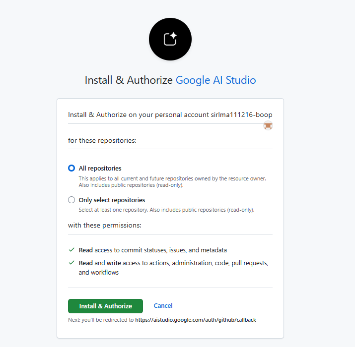
12- All repositories를 고릅니다.
- Install & Authorize를 누릅니다.
Google AI 스튜디오가 내 GitHub 계정에 저장소를 만들고 코드를 올릴 수 있게 허락하는 화면입니다. 화면 위의 GitHub 계정 이름이 내 것인지 확인하세요.
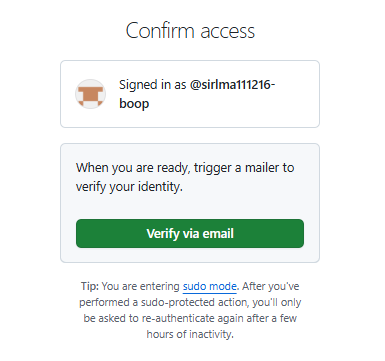
1- Verify via email을 누르고, GitHub 계정 이메일로 온 인증코드를 입력합니다.
인증코드는 본인이 직접 입력하고 다른 사람에게 알려 주지 않습니다. 메일이 안 오면 스팸함을 확인합니다.
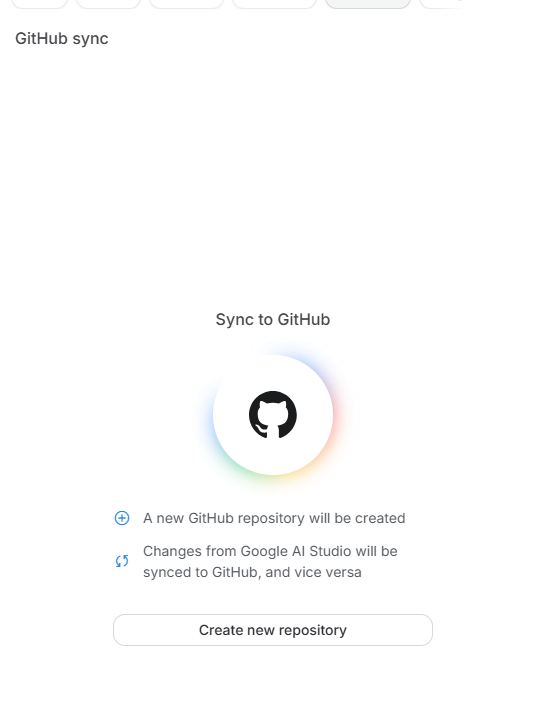
1- Create new repository를 누릅니다. 이 프로젝트를 담을 새 저장소를 만듭니다.
앞으로 AI 스튜디오의 변경 내용이 이 저장소와 동기화됩니다.
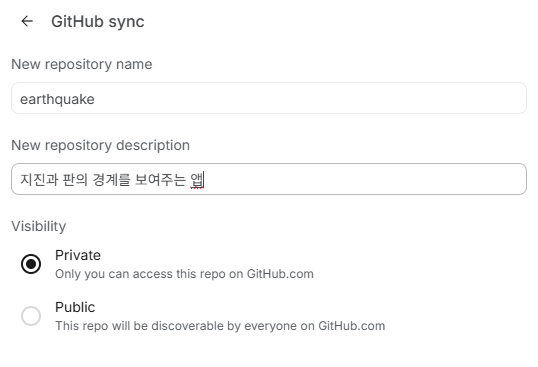
123- New repository name — seoul-highschool-map으로 씁니다. (화면 예시에는 earthquake로 입력되어 있습니다.)
- New repository description — 앱을 한 줄로 설명합니다. 예: 서울 고등학교 공시정보 지도
- Visibility — Private은 나만 코드를 볼 수 있고, Public은 누구나 볼 수 있습니다. 어느 쪽이든 키 값이나 개인 정보는 넣지 않습니다.
공개 범위는 코드에 대한 것입니다. Netlify로 배포한 지도 주소는 공개 범위와 상관없이 다른 사람이 열 수 있습니다.
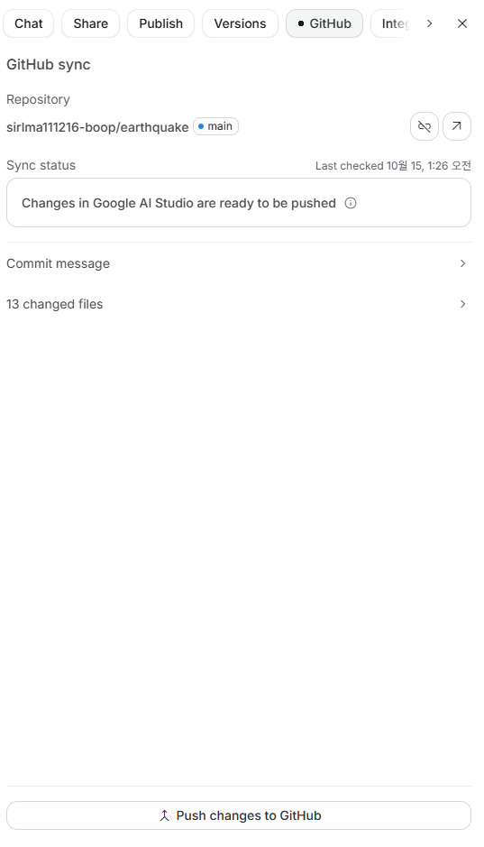
12345- Repository — 연결된 저장소(내 계정/저장소 이름)와 브랜치(main)입니다.
- Sync status — “ready to be pushed”는 AI 스튜디오의 변경이 아직 GitHub에 올라가지 않았다는 뜻입니다.
- Commit message — 이번 기록에 붙일 설명입니다.
- changed files — 이번에 올라갈 바뀐 파일 수입니다. 숫자는 사람마다 다릅니다.
- Push changes to GitHub — 눌러서 바뀐 내용을 GitHub로 올립니다.
커밋(Commit)은 바뀐 내용을 설명과 함께 하나의 기록으로 묶는 일이고, 푸시(Push)는 그 기록을 GitHub 저장소로 올려 보내는 일입니다.
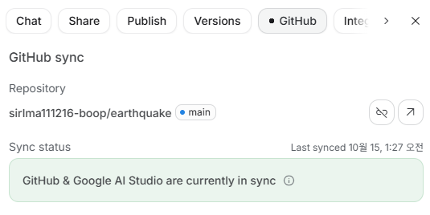
1- “GitHub & Google AI Studio are currently in sync”가 보이면 GitHub에 저장이 끝난 것입니다.
저장소 이름 옆의 화살표(↗) 버튼으로 GitHub 저장소를 열어 볼 수 있습니다. 연결 끊기 모양 아이콘은 누르지 않습니다. 처음 한 번만 1)~6)을 거치고, 그다음부터는 GitHub 탭에서 7) Push changes to GitHub만 누르면 됩니다.
다. Netlify로 배포하기
Netlify 계정이 없다면: 먼저 가입하기
- 새 탭에서 Netlify 가입 페이지를 엽니다.
- 가급적 Google 계정(또는 Gmail 주소)으로 가입합니다. Google 로그인 창이 열리면 AI 스튜디오에서 쓰는 계정을 본인이 직접 고릅니다.
- 이메일로 가입했다면 확인 메일을 열어 인증합니다.
- 사용 목적이나 팀 이름을 묻는 화면이 나오면 알맞게 고르거나 입력하고 넘어갑니다.
- 요금제를 고르는 화면이 나오면 무료(Free)를 고릅니다. 결제 정보는 입력하지 않으며, 결제를 요구하면 진행을 멈추고 강사에게 알립니다.
Netlify·GitHub 실제 화면 캡처 (2026년 10월, 다른 연수 실습 화면) — 메뉴 이름과 위치는 바뀔 수 있습니다.
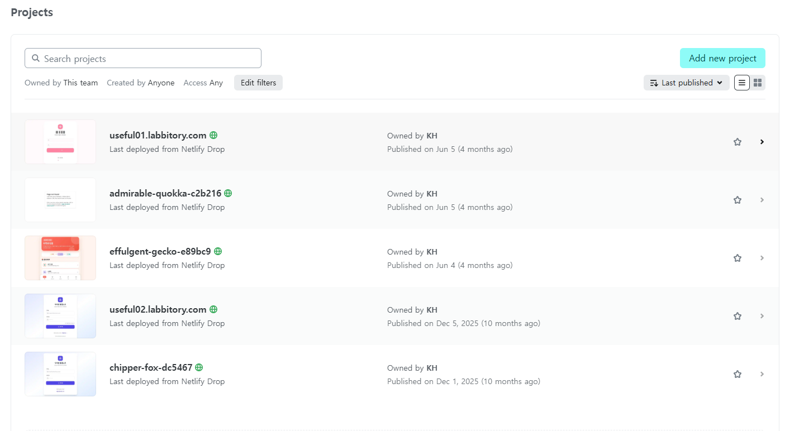
1- Add new project — 새 프로젝트(사이트)를 추가하는 버튼입니다.
처음 가입했다면 아래 프로젝트 목록이 비어 있습니다. 화면 예시의 목록은 다른 사이트들입니다.
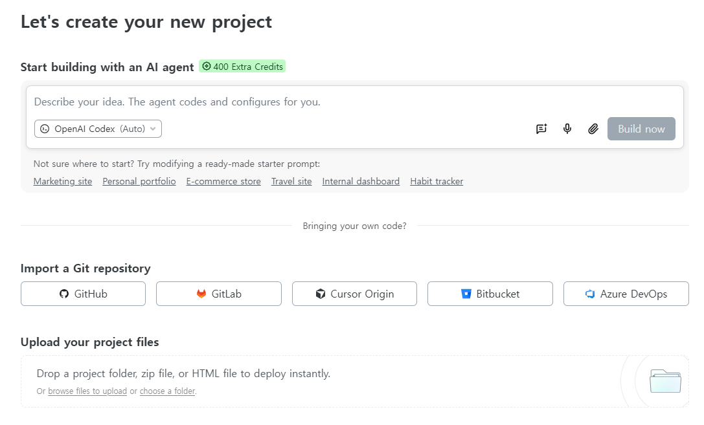
123- GitHub — 앞에서 만든 저장소를 가져옵니다.
- Start building with an AI agent — 쓰지 않습니다. 앱은 이미 AI 스튜디오에서 만들었습니다.
- Upload your project files — 쓰지 않습니다. 이 앱은 빌드와 서버 함수가 필요하므로 저장소를 연결해 Netlify가 빌드하게 합니다.
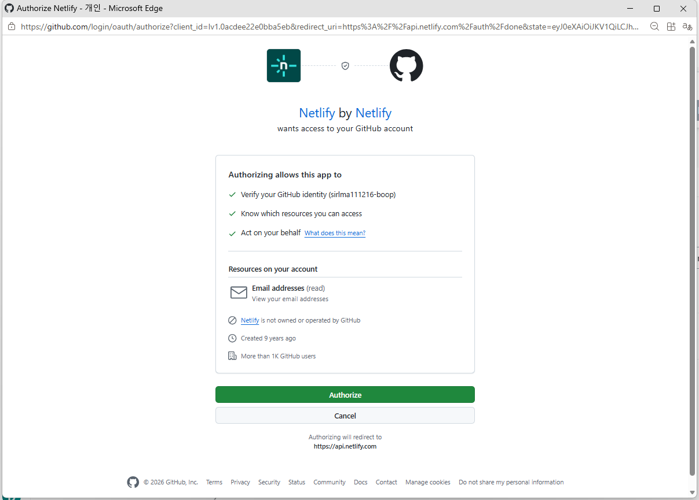
12- 괄호 안의 GitHub 계정 이름이 내 계정인지 확인합니다.
- Authorize — Netlify가 내 GitHub 계정을 확인하도록 허락합니다.
새 창으로 열립니다. 창이 안 보이면 작업 표시줄에서 찾거나 팝업 차단을 해제합니다.
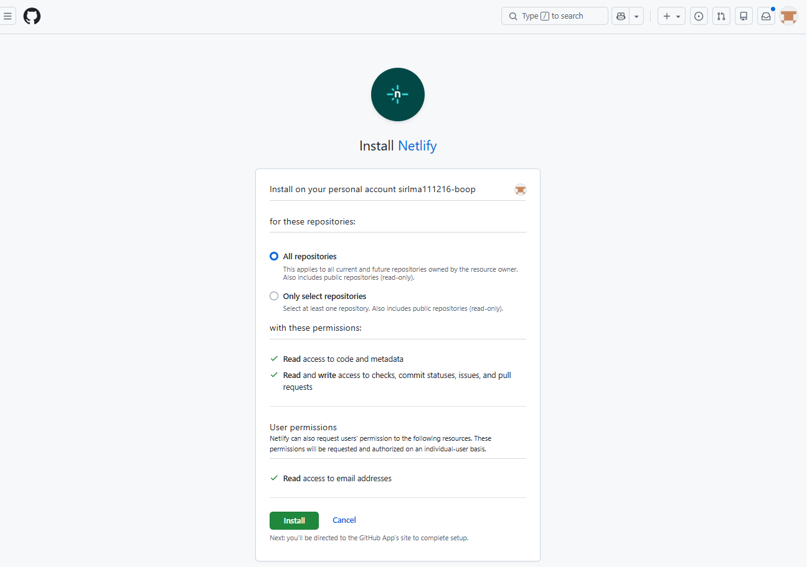
12- All repositories — 그대로 둡니다. (Only select repositories로 seoul-highschool-map만 허용해도 됩니다.)
- Install — Netlify가 저장소의 코드를 읽어 배포할 수 있게 설치합니다.
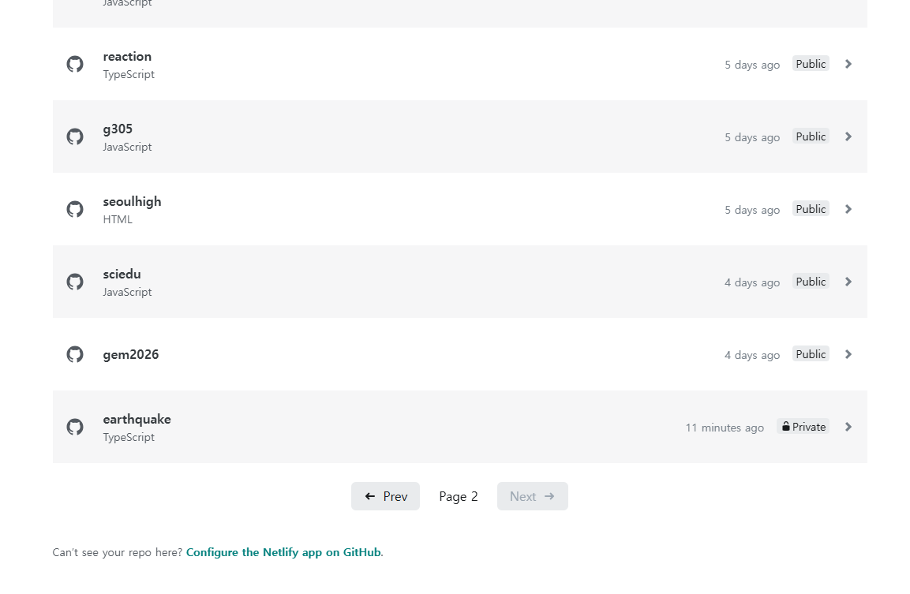
123- 내 저장소(seoul-highschool-map)를 누릅니다. 화면 예시에서는 다른 연수의 earthquake 저장소를 고르고 있습니다. Private 저장소도 목록에 나옵니다.
- Prev / Next — 저장소가 많으면 여러 쪽으로 나뉩니다. 안 보이면 다른 쪽을 넘겨 봅니다.
- Configure the Netlify app on GitHub — 그래도 안 보이면 눌러서 그 저장소 접근을 허용합니다.
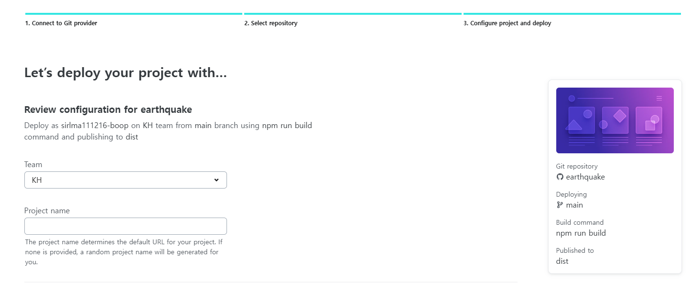
123- Team — 내 팀 이름이 자동으로 들어갑니다. 그대로 둡니다.
- Project name — 공개 주소가 됩니다. 예: seoul-highschool-2026 → seoul-highschool-2026.netlify.app. 영어 소문자·숫자·하이픈(-)만 쓰고 개인 정보는 넣지 않습니다. 비워 두면 임의 이름이 붙습니다.
- 요약 카드 — 저장소, 배포 브랜치(main), Build command(npm run build), Published to(dist)가 맞는지 확인합니다.
이름이 이미 쓰이고 있으면 다른 이름을 입력하라는 안내가 나옵니다. 뒤에 숫자를 붙입니다.
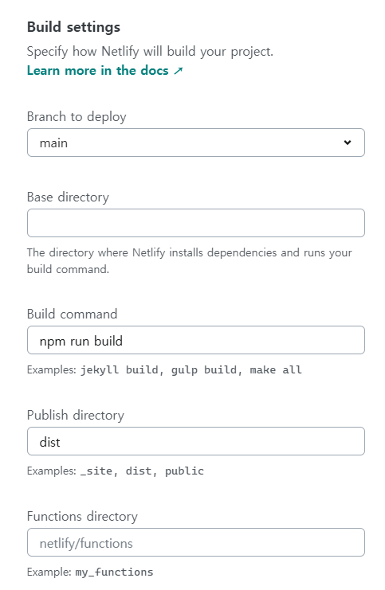
12345- Branch to deploy — main
- Base directory — 비워 둡니다. (package.json이 저장소 최상위에 있을 때)
- Build command — npm run build
- Publish directory — dist
- Functions directory — netlify/functions. 이 앱은 학교 목록을 서버 함수로 불러오므로 이 칸이 중요합니다. 화면 예시(다른 앱)처럼 비어 있으면 직접 입력합니다.
저장소의 netlify.toml 덕분에 값이 자동으로 채워져 있을 수 있습니다. 다르면 위 값으로 고칩니다.
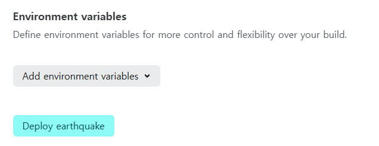
12- Add environment variables — 눌러서 Key SCHOOLINFO_API_KEY, Value 학교알리미 키 값을 넣습니다. 이 앱에서 넣는 값은 이것 하나뿐입니다.
- Deploy (저장소 이름) — 눌러서 배포를 시작합니다.
다른 연수(지진 지도)는 이 칸을 건너뛰지만, 이 앱은 서버가 학교알리미 키를 써야 하므로 반드시 넣습니다. 빼먹었다면 배포 후 Project configuration > Environment variables에서 추가하고 다시 배포합니다.
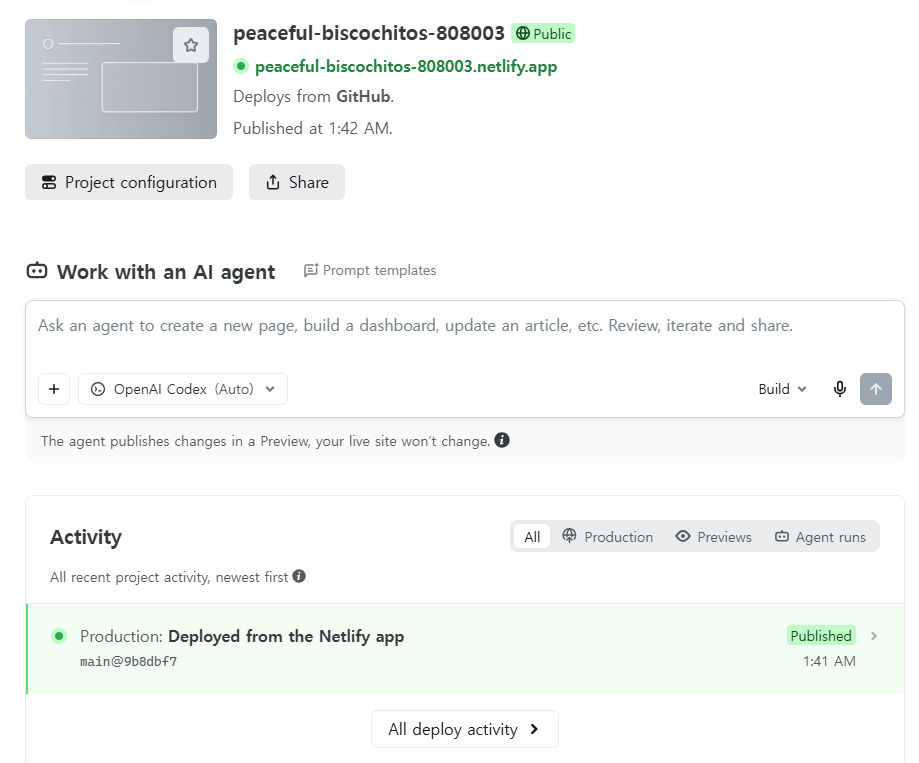
1234- …netlify.app 주소 — 공개 사이트 주소입니다. 눌러서 앱이 열리는지 확인합니다.
- Public — 로그인하지 않은 사람도 볼 수 있는 상태라는 뜻입니다.
- Activity — Published — 배포 성공 표시입니다. Failed가 보이면 기록을 눌러 빌드 로그를 확인합니다.
- Work with an AI agent — 쓰지 않습니다. 앱 수정은 AI 스튜디오에서 하고 GitHub에 푸시하면 Netlify가 자동으로 다시 배포합니다.
app.netlify.com 화면은 나만 보는 관리 화면입니다. 다른 사람에게는 ①의 …netlify.app 주소를 공유합니다.
빌드 설정 표
| 설정 | 입력할 값 | 설명 |
|---|---|---|
| Base directory | 비워 둠 | package.json이 저장소 최상위에 있을 때 |
| Build command | npm run build | 원본 코드를 브라우저용 파일로 만드는 명령 |
| Publish directory | dist | 빌드 결과가 담기는 폴더 |
| Functions directory | netlify/functions | 학교알리미를 부르는 서버 함수 폴더 |
| Environment variables | SCHOOLINFO_API_KEY 하나 | 서버 함수에서만 읽힘. VITE_를 붙이거나 netlify.toml에 적지 않음 |
배포 후 최종 점검
막혔을 때
| 증상 | 먼저 확인할 것 |
|---|---|
| 빌드 로그에 "Could not find package.json" | 저장소 최상위에 package.json이 있는지. 한 단계 아래 폴더에 있으면 Base directory에 그 폴더 이름을 넣습니다 |
| "Missing script: build" | AI 스튜디오에 "package.json에 build 스크립트를 넣고 npm run build로 dist가 만들어지게 해줘"라고 요청한 뒤 다시 푸시합니다 |
| 지도는 뜨는데 학교 목록이 비어 있음 | /api/schools 주소를 직접 열어 봅니다. HTML이나 "Page not found"가 나오면 저장소에 netlify/functions 폴더가 있는지, Functions directory 설정을 확인합니다 |
| "인증키가 설정되지 않았습니다" | Netlify의 Environment variables에 SCHOOLINFO_API_KEY가 정확한 이름으로 있는지. 넣거나 고친 뒤에는 Deploys에서 다시 배포해야 적용됩니다 |
| 공개 주소가 하얗게만 보임 | Publish directory가 dist인지, 빌드가 Published로 끝났는지 |
| 구 경계만 안 보임 | 경계 파일을 불러오지 못한 경우입니다. 지도와 학교 목록은 그대로 쓸 수 있습니다. 아래 "경계 파일을 저장소에 넣으려면"을 참고합니다 |
| 다른 사람은 주소를 못 엶 | 프로젝트가 Public인지, 비밀번호 보호가 켜져 있지 않은지 |
| 결제·유료 업그레이드 화면 | 진행을 멈추고 강사에게 확인합니다. 오늘은 무료 플랜과 netlify.app 주소만 씁니다 |
AI 스튜디오에서 고친 뒤 GitHub 탭에서 Push changes to GitHub만 누르면, Netlify가 같은 주소로 자동으로 다시 배포합니다. 바뀐 내용은 Netlify의 Activity가 Published로 바뀐 뒤 공개 주소에서 확인합니다. 환경 변수만 바꾼 경우에는 Netlify의 Deploys에서 다시 배포를 실행해야 적용됩니다.
경계 파일을 저장소에 넣으려면 (선택)
생성된 앱은 구 경계 파일을 자기 저장소의 public/data/seoul-gu.geojson에서 먼저 찾고, 없으면 이 연수 사이트의 파일을 불러옵니다. 연수 사이트에 기대지 않으려면 아래 파일을 내려받아 GitHub 저장소의 public/data/ 폴더에 올립니다(GitHub 저장소 화면의 Add file > Upload files). 올린 뒤에는 AI 스튜디오의 GitHub 탭에서 상태를 확인하고, 다음 수정 때 이 파일이 지워지지 않았는지 봅니다.
- seoul-gu.geojson 내려받기 (약 70KB) — 서울 25개 자치구 경계와 11개 교육지원청 외곽선
출처: southkorea/seoul-maps의 통계청 센서스용 행정구역경계(2013, 단순화본), Apache License 2.0. 교육지원청 외곽선은 같은 원본에서 소속 구끼리 맞닿은 안쪽 경계를 지워 만들었습니다. 화면 표시용 근사선이므로 경계 바로 옆 학교의 소속은 학교알리미의 주소로 판단합니다.
공식 안내 바로가기
- AI 스튜디오 Build 모드 안내 — GitHub 연결과 코드 내보내기
- GitHub — 저장소에 파일 추가하기
- Netlify — 저장소에서 배포하기
- Netlify — 빌드 설정
- Netlify Functions 시작하기 — netlify/functions 폴더와 주소 지정
- Netlify 환경 변수와 서버 함수 — 키를 안전하게 넣는 곳